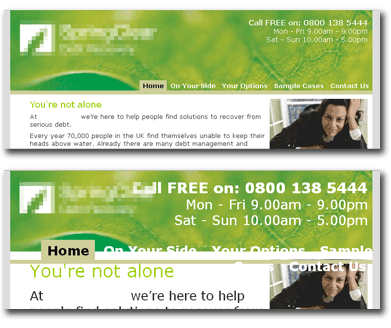

When you design for the web, you don't know what software people will use to experience your site, and you don't know what capabilities your users (and their software) have. Flexible layouts and resizable type can eliminate a lot of worst-case usability and design scenarios, but it's still extremely difficult to create pages layouts that don't break even if the user increases or the type size by more than a few settings.
Stick around and we'll give you a way to detect your visitors' initial font size setting—and a way to find out whenever your visitor increases or decreases the font size. Why would you want to know these things? Because with this knowledge in hand, you can create a set of stylesheets that adapt your pages to the users' chosen font sizes, preventing overlapping elements and other usability and design disasters. (You can also do a lot of other interesting things, which we'll discuss later.)
Some existing techniques—like Dan Cederholm’s "Bullet Proof CSS," faux columns that simulate columns with background images, and oversized images and background-position that allow for growth of text—are a great help, but some designs just aren't meant for large text. Furthermore, you won't want to serve bite-sized content to visitors with large resolutions just to cater to visitors with smaller resolutions—if you can avoid it.
Before we get into the technique itself, let's take a step back and examine the underlying problem.
We already know how to adapt to the size of the user's window and screen resolution. Stuart Colville's CSS Drop Column Layout shows content in four columns and drops the fourth below the third when there is not enough space on the screen. An older script by Cameron Adams allows for window-size dependent styling. If you use Cameron's resolution script, your website can learn when the visitor's window gets resized and react to it accordingly. Sadly, this is not the case when you resize the font.
It is remarkably easy to detect changes in font size. All you need is JavaScript that:
This is nothing new, and it has been used on some high-traffic web portals before. It becomes a lot more interesting, though, when you mix it with custom events. In essence, using a custom event means you get notified every time there is a change in font size.
Check the demo page to see the effect in action. (Resize the font in your browser to get the notifications.)
To implement this script, first embed it in the @head@ of your document:
<!DOCTYPE HTML PUBLIC "-//W3C//DTD HTML 4.01//EN"
"http://www.w3.org/TR/html4/strict.dtd">
<html dir="ltr">
<head>
<meta http-equiv="Content-Type" content="text/html;charset=utf-8">
<title>Font Resizer Demo</title>
<script type="text/javascript" src="textresizedetector.js"></script>
</head>
<body>
<h1>Resize me, now!</h1>
</body>Next, define two properties:
These are stored in two parameters called @TARGET_ELEMENT_ID@ and @USER_INIT_FUNC@ respectively.
<script type="text/javascript" src="textresizedetector.js"></script>
<script type="text/javascript">
//id of element to check for and insert test SPAN into
TextResizeDetector.TARGET_ELEMENT_ID = 'header';
//function to call once TextResizeDetector was initialized
TextResizeDetector.USER_INIT_FUNC = init;
</script>
Note: to determine the correct base font of the document, the element
with the @id@ that you store in TARGET_ELEMENT_ID should be fairly high
in the source order and not inherit font size from any other element. This also
means that the detector runs as soon as possible.
If you don't care about the base font size, you can specify any element.
Lastly, define the function that you set in the USER_INIT_FUNC property:
<script type="text/javascript" src="textresizedetector.js"></script>
<script type="text/javascript">
function init() {
var iBase = TextResizeDetector.addEventListener(onFontResize,null);
alert("The base font size = " + iBase);
}
//id of element to check for and insert control
TextResizeDetector.TARGET_ELEMENT_ID = 'header';
//function to call once TextResizeDetector was initialized
TextResizeDetector.USER_INIT_FUNC = init;
</script>The init() function is where you register listeners with
addEventListener. This ensures that your function—in this case
onFontResize()—is called when the font size has been changed.
It also returns the base font size, which is useful for Opera and IE7
users.
These browsers take a different approach to resizing: instead of increasing the font size, they zoom the whole document, including form elements and images. As there is no font resizing involved, your event will never fire, therefore initially reading out the base font size can help you adjust your layout/widget as necessary. *[Author clarification requested. —EK]*
h3. Back to workOnce you've set everything up, you can define your listener function:
<script type="text/javascript" src="textresizedetector.js"></script>
<script type="text/javascript">
function init() {
var iBase = TextResizeDetector.addEventListener(onFontResize,null);
alert("The base font size = " + iBase);
}
function onFontResize(e,args) {
var msg = "\nThe base font size in pixels: " + args[0].iBase;
msg +="\nThe current font size in pixels: " + args[0].iSize;
msg += "\nThe change in pixels from the last size:" + args[0].iDelta;
alert(msg);
}
//id of element to check for and insert control
TextResizeDetector.TARGET_ELEMENT_ID = 'header';
//function to call once TextResizeDetector has init'd
TextResizeDetector.USER_INIT_FUNC = init;
</script>When the event fires, this function retrieves two parameters:
textSizeChanged—andiBaseiDeltaiSizeAll font sizes are in pixels.
The TextResizeDetector object itself has three methods:
addEventListener()stopDetector()startDetector()stopDetector() method has been executed beforehand.That’s grand, but what to do with this information? Whatever you please. Possible options include
How else might this script be used? Tell us about it in the comments.
That is all there is to it. You can download all the code and examples in this zip.
For more info about custom events, here are two good resources.